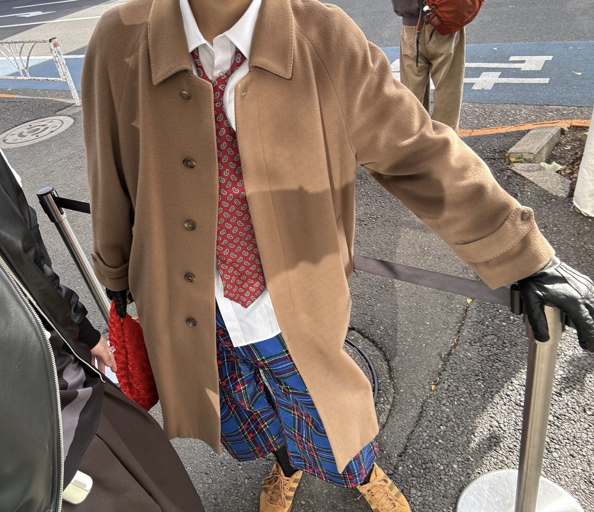

変化と意識
外見の変化が、内面の自信へと繋がりました。
服を意識し始めると、自然と髪型や周りからの見られ方も意識するようになりました。その結果、以前よりもポジティブ思考になり、自分に自信が持てるようになったのが一番の大きな変化です。
芽生えた「目的意識」
ただ「服を着る」のではなく、以下のような問いを自分に投げかけるようになりました。
- この服をどう着こなすか？
- 周囲にどのような印象を与えたいか？
- 今日のコーディネートのテーマは何か？
このように、服に対して明確な目的意識を持って向き合うことが楽しくなりました。
⚠️ これから服を好きになる方へ
服にのめり込みすぎると、ついつい買いすぎてしまい、クレジットの支払いが厳しくなってしまう恐れがありますのでご利用は計画的に…。
これから服を好きになりたい、興味を持ちたいという方は、計画的にお金を使うことを強くおすすめします！